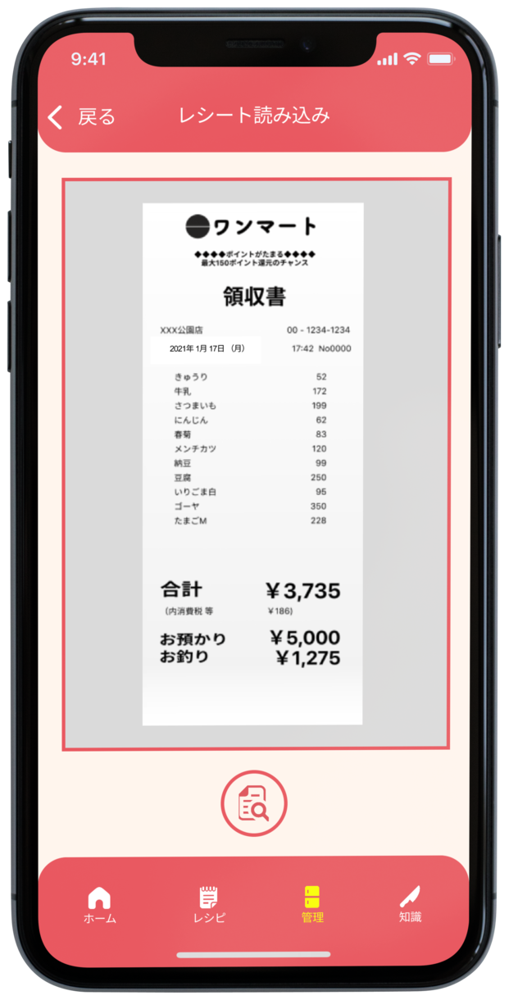
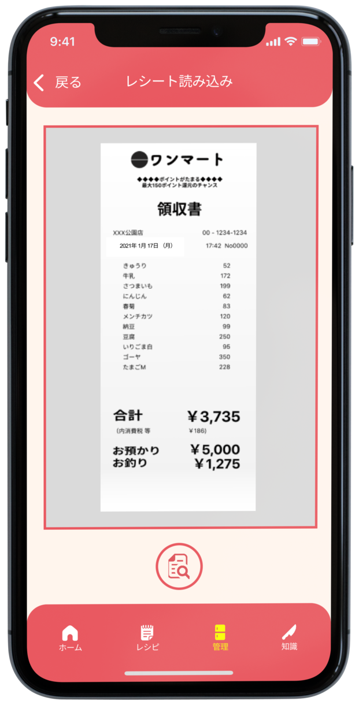
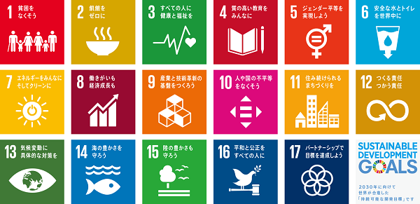

作品概要
機能
利用・管理・保存の観点から家庭内食品ロスを減少に貢献
1.レシピを見る
楽天レシピAPIを用いたレシピ提案により、自宅にある食材を無駄なく利用する。
2.食品を管理する
自宅にある食材を登録。 レシート読み込み機能で簡単に登録が可能。 賞味期限切れや買いすぎによる廃棄をなくす。
 


3.加工法・保存法を見る
加工法・保存法など食材に関する知識を得ることで過剰除去や腐敗による廃棄をなくす。
制作工程
SDGsとは
Sustainable Development Goals（持続可能な開発目標）
SDGsとは「Sustainable Development Goals（持続可能な開発目標）」の略称。 2015年9月に国連で開かれたサミットの中で世界のリーダーによって決められた、持続可能な社会を目指すために2030年までに世界が達成すべき国際社会共通の目標。
我々が取り組んだプロジェクト項目
項目12-3
2030年までに小売・消費レベルにおける世界全体の一人当たりの食料の廃棄を半減させ、収穫後損失などの生産・サプライチェーンにおける食品ロスを減少させる。
なぜこの項目なのか
経済面・環境面・社会面などに影響があり、問題が深刻化している
家庭系食品ロス量は284万トンに及び、1人当たり1日の食品ロス量は約132g(茶碗約一杯)にもなる。 食品ロスによる問題点は経済面・環境面・社会面などあらゆる点から問題視されており、今後の日本が持続可能な社会を作るうえで無視することはできない問題と考えたので今回プロジェクトを進めることにした。
プロジェクトの目的
食品ロス減少に貢献するアプリを開発し、項目12に貢献する
我々のチームが食品ロス減少に貢献するアプリを開発し、家庭内食品ロスを意識する人が増えることで項目12に貢献することができるのではないかと考え、目標を設定した。
アンケート
食品ロスを意識していない
家庭で料理を行う人を中心にアンケートを実施した。
普段から食品ロスを意識しておらず、食品ロスを発生させてしまっているということが分かった。
問題提起
なぜ食品ロスが発生するのか
なぜ食品ロスが発生するのかアンケートを行った結果、利用・管理・保存などの点で食品ロスを発生させているということが分かった。
また、家庭における食品ロスを解決するための負担は大きく、冷蔵庫の中身や賞味期限を記憶したり記録しなければならない。
賞味期限などを意識しながら、買い物やレシピを考えることは難しい。などの意見もあった。
解決策
利用・管理・保存の点で、手間を負担を少なく食品ロスを減らせる仕組みを提案する
利用・管理・保存の点で食品ロスが発生を抑制するアプリを開発することで食品ロス減少に貢献する。
OCRを用いたレシート読み込み機能を用いることで、データ登録の負担を減らし、食品ロス減少に貢献する。
ペルソナ
家庭で料理をする主婦
家庭で料理をする主婦をターゲットに設定。
役割と計画
iOSアプリ開発とデザインを担当
チームでWEBアプリとiOSアプリを開発することになり、自分はiOS開発とアプリデザイン両方を担当した。
ラフスケッチ
ラフはチーム全員で描く
普段スマホをあまり使わないような主婦の方でも簡単に扱えるデザインにするためには、様々な人にとっての「わかりやすい」をまとめる必要があると考え、ラフスケッチはチーム全体で行い、アイデアを出し合った。

ロゴ・アプリ名
レシートとレシピ
ロゴとアプリ名はチーム全体で案を出し合った。このアプリの特徴であるレシート読み込みとレシピ提案を掛け合わせたアプリ名のロゴが採用された。
UI
どこかで見たようなUI
普段アプリを使い慣れていない人でも直感的に操作できる単純なUIになるようにデザインした。
またアイコンや図形は角を丸くし、誰でも使える安心感あるデザインを心掛けた。
色
やさしさのある色
普段アプリを使い慣れていない人でも安心して使えるようなやさしさをイメージし、薄いピンクと濃いピンクで色を構成し、アクセントカラーに黄色を使用した。
プロジェクトの振り返り
アプリ利用後アンケート
90％の人がアプリを使って食品ロスを意識できた。
利用後アンケートの結果からほとんどの人が食品ロスを意識でき、このアプリは食品ロス問題に効果があるということが分かった。


大変だったこと
完全オンラインでの意思疎通
本来は週に一度チームで集まり開発を進めていくという予定だったが、コロナウイルスの影響ですべてオンラインになってしまい、顔を合わせて会議を行ったのは一度だけだった。 リモート会議で問題なく進めていると感じていたが、直接会議をした際に今までどれだけグループ内の意思疎通が取れていなかったかを思い知った。
努力したこと
各コースの人の価値観や考え方の共有
チーム学習は4つの異なるコースの人たちが自身が学んできたことをアウトプットし、企画・提案・開発を行っていくというもので、それぞれ考え方・価値観・作業の進め方などが異なり、チームをまとめることが大変だった。 デザインプロセスの重要性を理解してもらうことができなかった点や、エンジニア以外で技術の話を理解できる人が自分以外にいなかった点などが問題で、デザイナーではあったが開発にも携わることでチームをまとめた。
失敗したこと
iOSアプリ開発の中断
計画段階ではiOSアプリもリリースする予定だった。 しかし、オンラインでの意思疎通がうまくいかず、プロジェクト進行が遅れたことでiOS開発を中断することになってしまった。 iOSを中断することでWebアプリが完成し、プロジェクトの目標を達成することはできたが自身の行ってきた作業が無になったのは非常に悔しかった。
今後の計画
iOSアプリ開発の再開・アンケート結果から機能改善
今後の計画としてiOSアプリの開発を再開し、ユーザーアンケートから得られた結果をもとに機能の改善を行っていく。
| トップに戻る | 次の作品を見る |